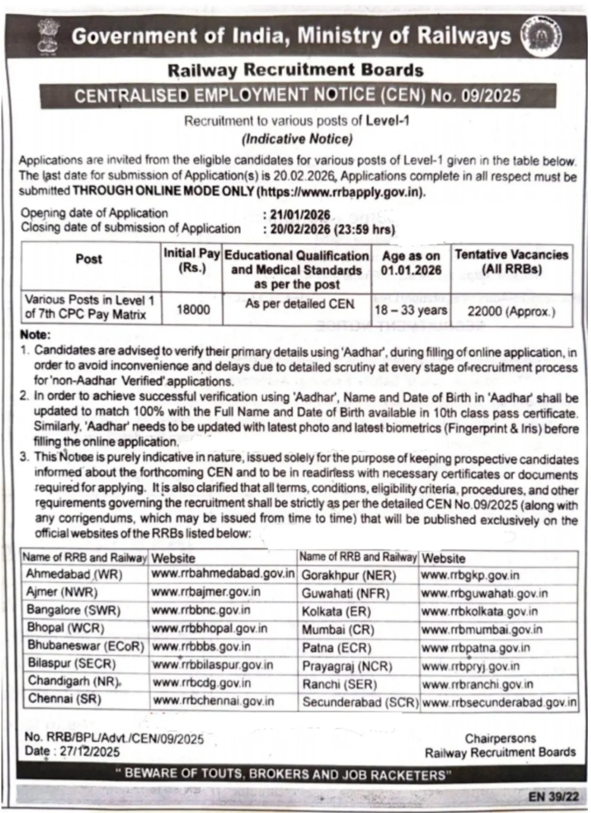

RRB Group D 2026
Recruitment Overview
| Name of The Organization | Railway Board RRB |
| Post Name | Assistant (Track Machine), Assistant (Bridge), Track Maintainer (Group IV), Assistant (P-way), Assistant (TRD), Assistant Loco Shed (Electrical), Assistant Operations (Electrical), Assistant (TL & AC), Assistant (C & W), Pointsman B, and Assistant (S & T) |
| Advt No. | Cen 09 2025 |
| Total Posts | 22000 |
| Location of Job | Punjab & All India |
| Apply Mode | Online |
| Last Date to Apply | 20 February 2026 utp 5:00PM |
| Selection Process | Computer Based Test Physical Efficiency Test (PET) Document Verification and Medical Examination |
| Exam Pattern | General Science: 25 Marks Maths: 25 Marks GK GS: 20 Marks Reasoning: 30 Marks |
| Official Website | rrb.gov.in |
RRB Group D Notification 2026
The notification for 22000 Group D posts in various zones of Indian Railways is released on 23 December 2025.
RRB Group D Vacancies
Important Dates
| Advertisement Date | 23 December 2025 |
| Apply Start Date | 21 January 2026 |
| Apply Last Date | 20 February 2026 up to 5:00 PM |
| Last date for submission of fee | 20 February 2026 up to 11:00 PM |
RRB Group D Eligibility Criteria
RRB Group D Recruitment 2026 Education Qualification
Candidates who have passed 10th Class, ITI, or an equivalent qualification, or who hold a National Apprenticeship Certificate (NAC) issued by NCVT, are eligible to apply for the RRB Group D 2026 Examination.
Age Limit (As on 01-01-2026)
The age limit for RRB Group D is 18 years to 33 years. For OBC Category candidates maximum age limit is 36 years and 38 years for SC/ST category Candidates
- Minimum Age Limit: 18 Years
- Maximum Age Limit: 33 Years
- The upper age limit is relaxed up to 36 years for Other Backward Classes(OBC)
- The upper age limit is relaxed up to 38 years for SC/ST.
- Reservation only for Punjab State candidates.